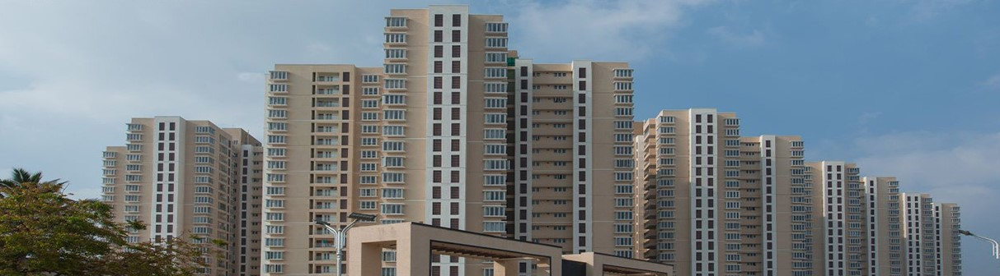

<mat-toolbar style="background-color: #3FB8DE;">
    <mat-toolbar-row class="py-2 d-flex justify-content-between">
        

        <div>
            <button mat-button class="header-btn" aria-label="home" routerLink="/home"
                routerLinkActive="active">Home</button>
            <button mat-button class="header-btn" aria-label="new land" routerLink="/new-land"
                routerLinkActive="active">New Land</button>
            <button mat-button class="header-btn" aria-label="logout">Logout</button>
        </div>
    </mat-toolbar-row>
</mat-toolbar>

<section>
    <div class="header-image">
        
        <div class="overlay"></div>
        <h1 class="header-text">
            land
            alienation
        </h1>
    </div>
</section>